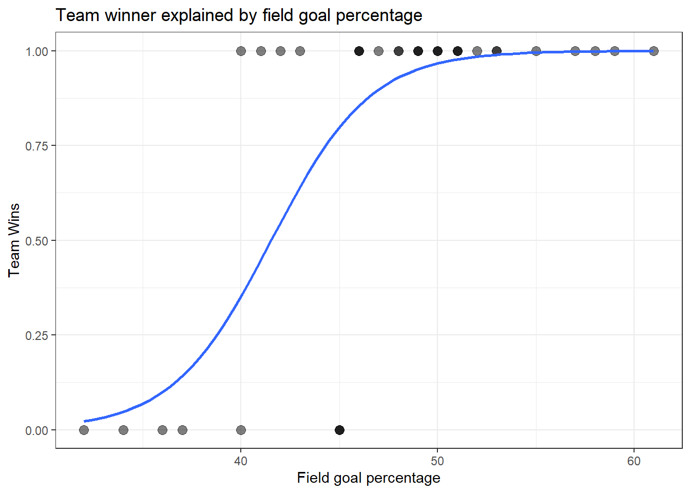
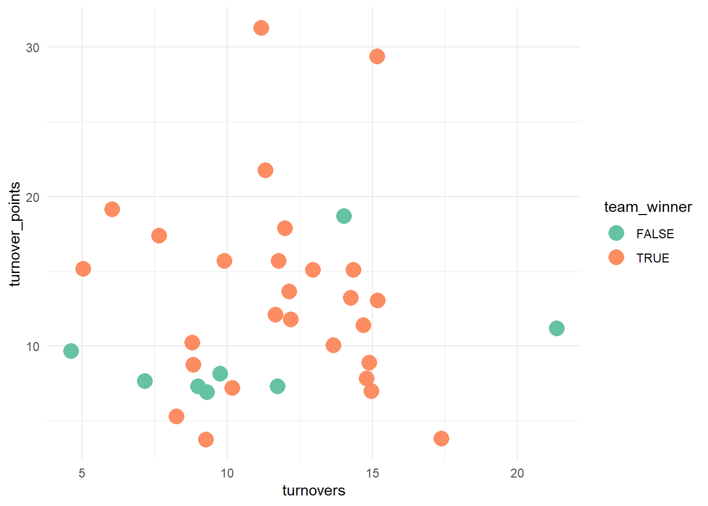

Michigan State vs. Michigan men’s basketball, in-game action. Photo by Michael Barera, CC BY-SA 4.0.
Show Code
msu_basketball |>ggplot(aes(field_goal_pct, as.numeric(team_winner)))+geom_point(size =3, alpha = .5)+geom_smooth(method ="glm", method.args =list(family ="binomial"), se =FALSE)+theme_bw()+labs(title ="Team winner explained by field goal percentage",x ="Field goal percentage",y ="Team Wins")

Interpretation - The graph indicates the higher the field goal percentage in a game is a good predictor of whether or not the team wins the game or not
I would like to create a simple logistic regression model for Michigan State basketball.
A single numeric predictor- Is there a meaningful way to predict whether Michigan State basketball wins or not? The outcome variable is team_winner(win/loss) and the predictor variable is field goal percentage.
Interpretation of logistic model
The S-curve is doing exactly what it should. Below about FG% = 35, the curve sits near 0 — Michigan State essentially never wins games where they shoot that poorly. Above about FG% = 55, the curve is pinned near 1 — they essentially always win. In between, the curve rises steeply, which visually confirms the strong effect size your model found (odds ratio ≈ 1.49 per point of FG%).
Logistic regression model. A simple model with one numeric variable as a predictor variable
Show Code
win_model <-glm(team_winner ~ field_goal_pct, data = msu_basketball, family ="binomial")summary(win_model)
Call:
glm(formula = team_winner ~ field_goal_pct, family = "binomial",
data = msu_basketball)
Coefficients:
Estimate Std. Error z value Pr(>|z|)
(Intercept) -16.5225 6.2638 -2.638 0.00835 **
field_goal_pct 0.3977 0.1433 2.776 0.00550 **
---
Signif. codes: 0 '***' 0.001 '**' 0.01 '*' 0.05 '.' 0.1 ' ' 1
(Dispersion parameter for binomial family taken to be 1)
Null deviance: 37.628 on 34 degrees of freedom
Residual deviance: 19.120 on 33 degrees of freedom
AIC: 23.12
Number of Fisher Scoring iterations: 6
Interpretation of a generalized logistic model.
The natural logarithm of the odds is (0.3977) which is positive so the probability is increasing. It tells us the direction of travel. As field_goal_percentage increases the chances of winning increase, due to the positive score. The p value is (0.00550) which is very small. This is a statistically significant result. This model tell us that field goal percentage has a positive relationship with winning games.
Because team_winner is binary, this model estimates the log-odds of winning as a function of field goal percentage — a positive field_goal_pct coefficient means higher shooting percentages are associated with a higher probability of winning. Exponentiating the coefficient (exp(coef(win_model))) converts that into an odds ratio: for example, a value of 1.15 would mean each one-point increase in field goal percentage multiplies the odds of winning by 1.15, holding nothing else constant.
Bottom line for your write-up: there is a statistically significant, strong positive relationship between field goal percentage and win probability for Michigan State this season — each additional point of FG% is associated with roughly a 49% increase in the odds of winning.
Field goal percentage matters, and matters a lot statistically. The coefficient for field_goal_pct is 0.3977 with p = 0.0055 — well under the standard 0.05 threshold, so there’s strong evidence of a real relationship, not just noise in this sample.
Odds ratio (that last output, exp(coef)):1.488458 for field_goal_pct. That means for every 1-percentage-point increase in field goal percentage, the odds of Michigan State winning multiply by about 1.49 — roughly a 49% increase in the odds of winning per point of FG%. That compounds fast: a 10-point jump in FG% would multiply the odds by 1.49^10 ≈ 57x.
Multiple logistic regression. I want to determine if field goal percentage and turnovers influence whether or not the team wins. Common sense says that it plays a huge part.
Bottom line: across every combination you’ve tried (3-predictor, and now 2-predictor), field_goal_pct is the only variable that consistently and significantly predicts wins. The simplest model — team_winner ~ field_goal_pct — remains the best-supported one. This is actually a good outcome for your report: it means the relationship you found first wasn’t a fluke, and you’ve now demonstrated that with real robustness checks rather than just asserting it.
field_goal_pct coefficient = 0.3977, p = 0.0055 — statistically significant. Higher field goal percentage is strongly associated with a higher chance of winning.
Odds ratio = 1.488 — each additional percentage point of FG% multiplies Michigan State’s odds of winning by about 1.49 (a ~49% increase in odds per point).
Intercept = -16.52 (odds ≈ 6.67e-08) — essentially, a team shooting 0% FG has near-zero odds of winning. Sanity check passes, but not meaningful on its own since FG% = 0 never actually happens.
Deviance drop: null deviance 37.628 → residual deviance 19.120, a big reduction, meaning FG% is doing real explanatory work. AIC = 23.12.
I want to see if there is a relationship between turnovers Michigan State commits during a game and the amount of points the turnovers caused.
Show Code
msu_basketball |>ggplot(aes(turnovers, turnover_points, color = team_winner))+geom_jitter(size =5) +scale_color_brewer(palette ="Set2")+theme_minimal()

Interpretation
What this means for your analysis: it explains whyturnovers came back statistically insignificant (p = 0.444) in your two-predictor logistic model. The model wasn’t wrong or broken — the underlying data genuinely doesn’t show a strong relationship here. This is actually a good, honest finding for your report: despite the intuitive assumption that turnovers should heavily influence winning, the data says field goal percentage is doing essentially all the work, and turnovers aren’t adding meaningful predictive power on top of it.
If turnovers really mattered a lot, you’d expect losses (green) to cluster in one area — say, high turnovers/low turnover-points — and wins (orange) to cluster somewhere clearly different, the way wins and losses separated cleanly by field goal percentage in your earlier plots.
Instead, green and orange dots are scattered all over the same space. Michigan State has won games with very high turnover-point totals (~29-31) and also lost games with very few turnovers (~4.5). There’s no visible zone that’s “loss territory” versus “win territory.”
Logistic regression model - probability of winning by field goal pct
Show Code
model <-glm(team_winner ~ field_goal_pct, data = msu_basketball, family = binomial)# Generate data for the curveteam <-data.frame(field_goal_pct =seq(min(msu_basketball$field_goal_pct, na.rm =TRUE),max(msu_basketball$field_goal_pct, na.rm =TRUE),length.out =500))team$prob <-predict(model, newdata = team, type ="response")# Create interactive plotplot_ly(data = team,x =~field_goal_pct,y =~prob,type ='scatter',mode ='lines',name ="Probability curve") |>layout(title ="Probability of Winning by Field Goal Percentage",xaxis =list(title ="Field Goal Percentage"),yaxis =list(title ="Probability of Winning") )
Adding variables to the logistic regression model. Will adding more predictor variables improve the model? In the case of whether or not the team wins, there may be multiple factors(predictors) that we may want to consider
Show Code
model <-glm(team_winner ~ field_goal_pct + turnovers,data = msu_basketball,family = binomial)summary(model)
Call:
glm(formula = team_winner ~ field_goal_pct + turnovers, family = binomial,
data = msu_basketball)
Coefficients:
Estimate Std. Error z value Pr(>|z|)
(Intercept) -18.8593 7.5493 -2.498 0.01248 *
field_goal_pct 0.4163 0.1525 2.730 0.00634 **
turnovers 0.1401 0.1830 0.765 0.44401
---
Signif. codes: 0 '***' 0.001 '**' 0.01 '*' 0.05 '.' 0.1 ' ' 1
(Dispersion parameter for binomial family taken to be 1)
Null deviance: 37.628 on 34 degrees of freedom
Residual deviance: 18.536 on 32 degrees of freedom
AIC: 24.536
Number of Fisher Scoring iterations: 6
Interpretation
Both predictor variables(field goal percentage and turnovers) have a positive coefficient, which implies that both of the predictor variables do influence winning in a positive way. The p value is low for field goal percentage which implies that it is statistically significant, however the p value for turnovers is a bit high, which tells us that turnovers do not influence whether or not the team wins as much as field goal percentage does. Turnovers is not a good candidate to include in the model because of the high p value. The AIC in this model is 24.53. The AIC in the single numeric variable model is 23.12. The AIC is increasing which is not a good sign for an improved model. The Residual deviance has decreased from 19.120 to 18.536 which is a good sign. The residual deviance measures how well the model fits the data. It is a summary of the discrepancies between observed outcomes and the model’s predictions. Lower values indicate a better fit.
field_goal_pct is a significant predictor of winning (p = 0.006) — each 1-point increase in FG% (as a proportion, so realistically a 0.01 unit change) raises the log-odds of winning by 0.42.
turnovers is not significant (p = 0.444) — with only 35 games, there’s not enough evidence turnovers move the needle once FG% is in the model.
This code shows the relationship between field goal percentage and team winning in this dataset